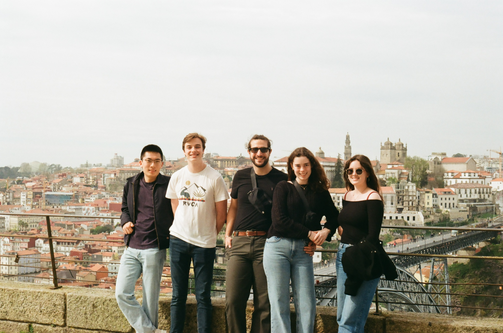
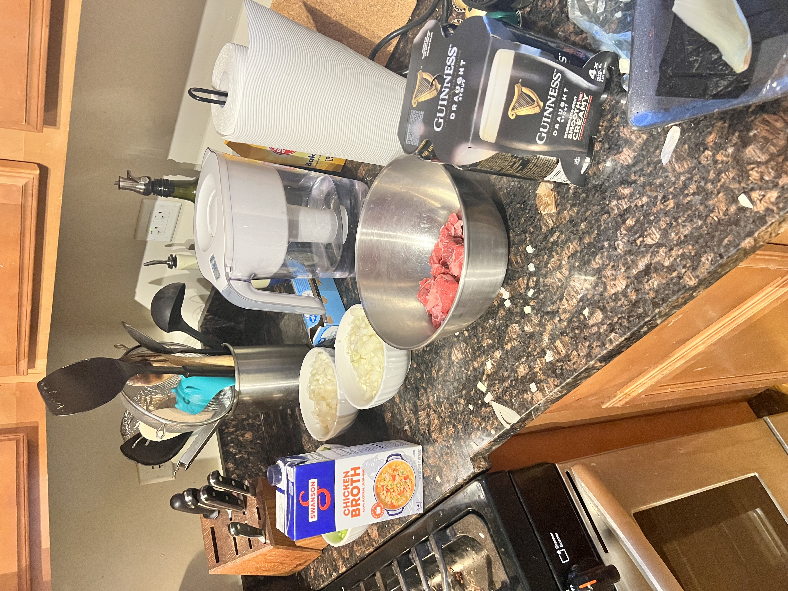

More About Me
Thanks again for checking out my portfolio! While I study Computer Science, I also have a wide variety of interests and skills which have opened me to countless opportunities, some of which I showcased in my main portoflio. If you're here, I'd love to show you some odds and ends which didn't make it onto the main page.

Like almost everyone, I too enjoy traveling. This picture was taken on a recent Spring Break trip to Portugal.
Like almost everyone, I too enjoy traveling. This picture was taken on a recent Spring Break trip to Portugal.
I recently acquired a 1986 Chevrolet Corvette as a fun project for myself. This summer, I hope to take it out to various car shows, autocross events, and road trips. I can't tell you how many hours I spent on Facebook Marketplace before I found the perfect combination: pre-facelift C4, 4 speed manual transmission, L98 V8 engine. Sure, it may have 11 previous owners, 115,000 miles, and squeaks and rattles like you wouldn't believe, but I couldn't have asked for anything else.


This past year, I've become more interersted in cooking and baking. I find it to be a wonderful break from work and classes. Some of my most recent meals have been Irish Beef Stew, Thai Curry Chicken, and Salisbury Steak. I don't have a specific preference of food, though I do prefer meals which involve a glass of Guinness Beer.
This past year, I've become more interersted in cooking and baking. I find it to be a wonderful break from work and classes. Some of my most recent meals have been Irish Beef Stew, Thai Curry Chicken, and Salisbury Steak. I don't have a specific preference of food, though I do prefer meals which involve a glass of Guinness Beer.
Let's Talk